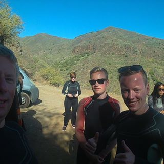
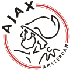

Mijn naam is Tim Bothof, ik ben 16 jaar oud en ik woon in Raamsdonksveer.
Ik ben geboren op 14 april 2001.
Ik heb een broer en geen gescheiden ouders dus
leef lekker in een huis al heel mijn leven.
Ik zit op voetbal, mijn favoriete club is ajax
Dingen die ik graag doe zijn:
Verder leef ik altijd een beetje van dag op dag, hierdoor heb ik weinig doelen voor in de toekomst
en kan ik mezelf lastig schatten over een aantal jaar met beroep en dergelijke.
Ik ben ook een persoon dat altijd blijft proberen te lachen dus ik heb een beetje de nep glimlach gemasterd,
hierdoor lijk ik eigenlijk altijd blij ook al hoeft dat dus niet te zijn.
Ook lach ik vaak dingen af maar dat is gewoon een manier hoe ik met dingen deal.
Mijn favoriete artiest heb ik niet specifiek, ik houd voornamelijk van elektrische muziek (radio muziek),
maar als ik dan toch namen moet noemen dan zeg ik Robin Schulz.
Ik heb een hond, Luna heet ze.
Ze is nog een pup en het ras is een golden retriever.
Ik volg nu de opleiding applicatie ontwikkelaar niveau 4 op het Da Vinci in Gorinchem.
Ik kwam van het Dongemond College af waar ik eigenlijk ooit ben begonnen op het havo/vwo en
ben uiteindelijk gezegd naar vmbo gt.
Verder werk ik momenteel in de bediening bij 't zusje in Raamsdonksveer.
Ik heb vroeger gewerkt als vakkenvuller bij de welbekende jumbo.
Echte doelen heb ik niet precies, wel wil ik gewoon een goede baan waar ik het liefst zo veel mogelijk mee verdien.